Herbier imaginaire
[2024]
Le réchauffement climatique impacte de façon considérable la flore qui nous entoure. Cet objet éditorial A5 informe sur une flore marine de nouvelle génération, un mélange entre hybridation et adaptation.
La conception graphique repose sur l’appropriation des codes des ouvrages encyclopédiques du XVIIIe au service d’un récit fictif et futuriste, et la maîtrise de la risographie.
Typographie utilisée : LTC Bodoni 175 de Giambattista Bodoni
 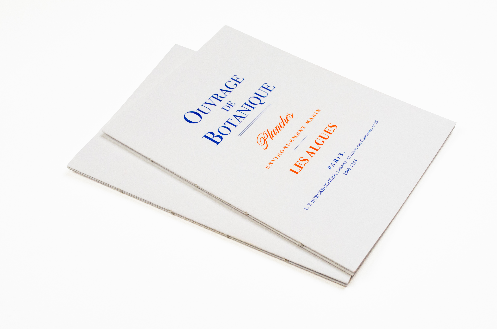
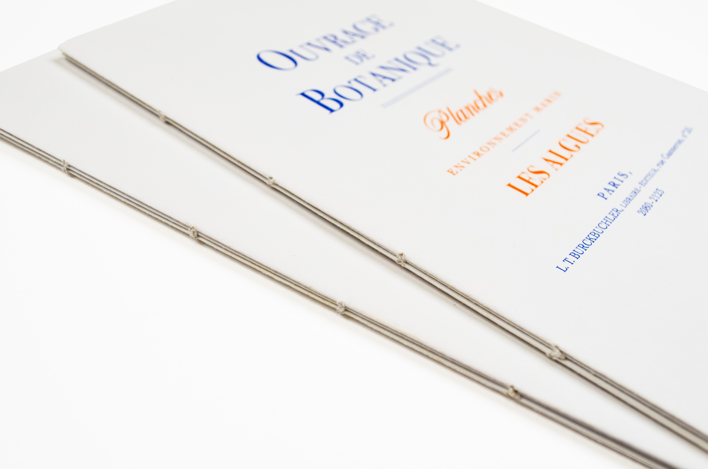
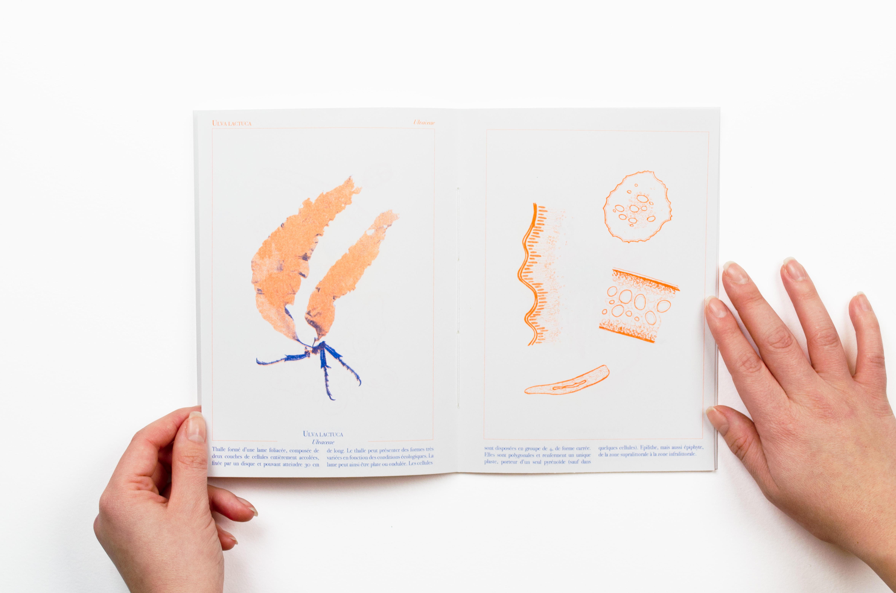
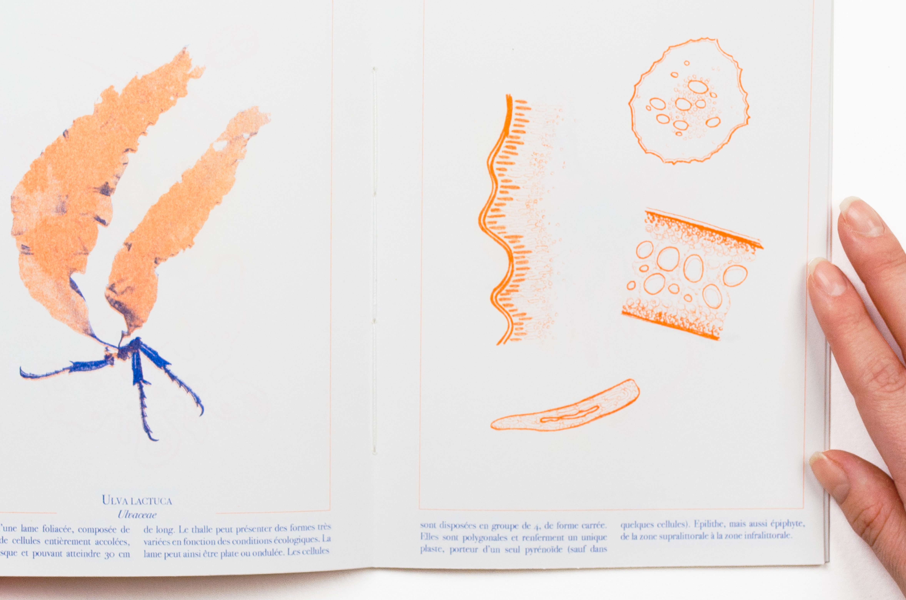
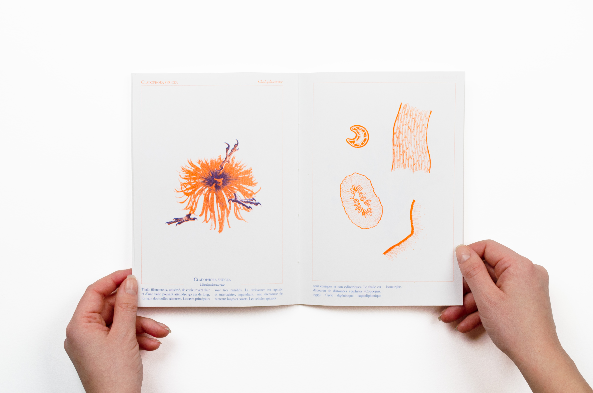
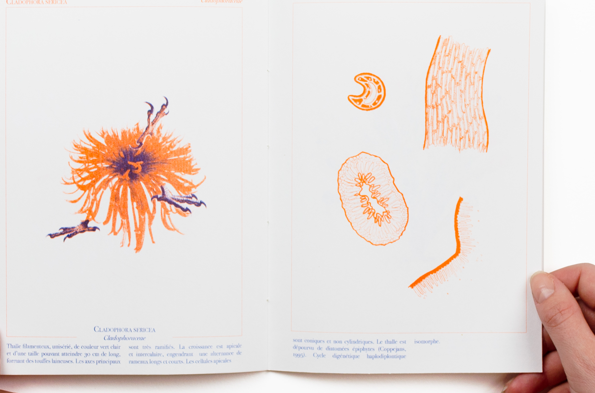
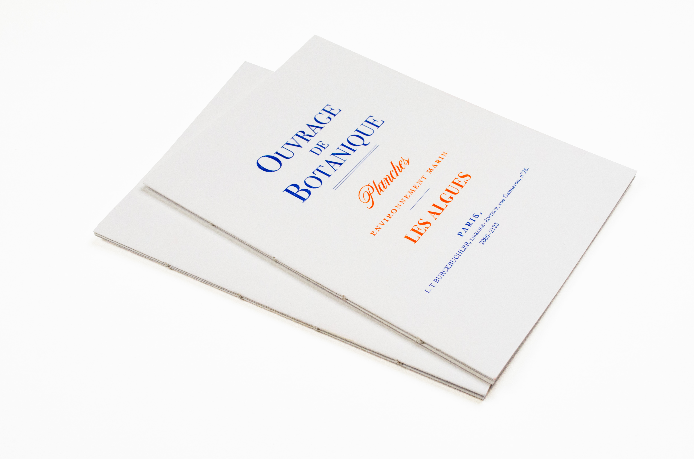
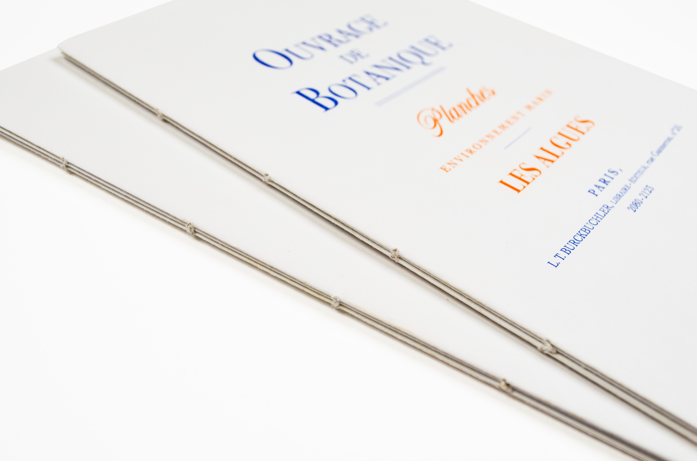
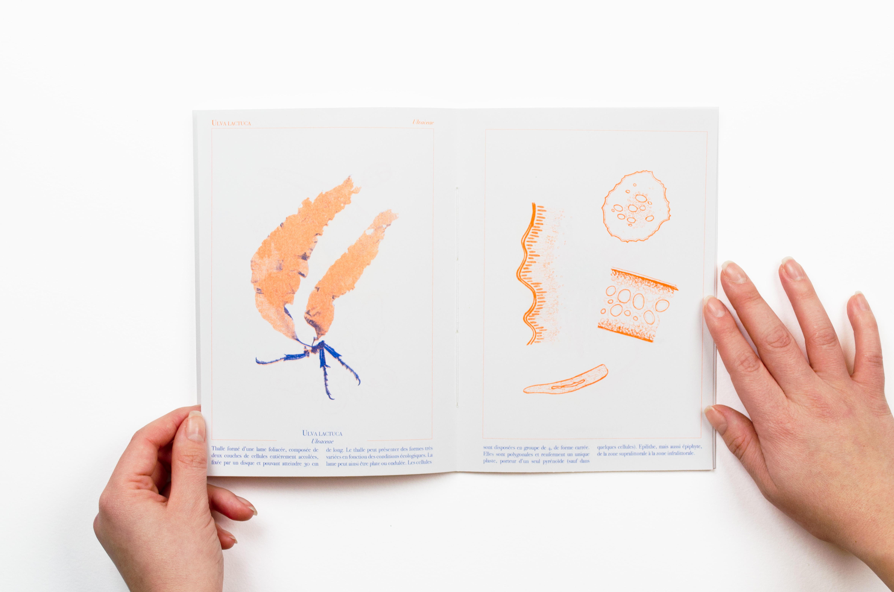
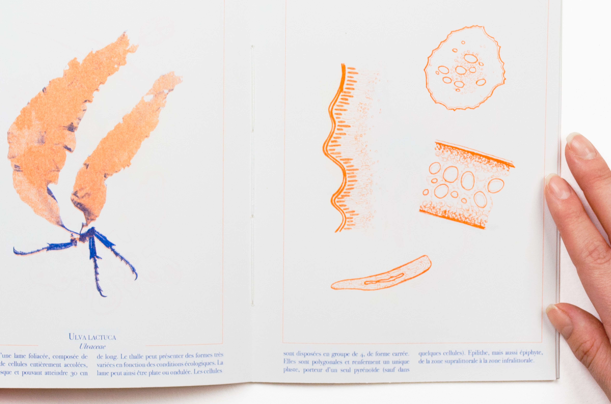
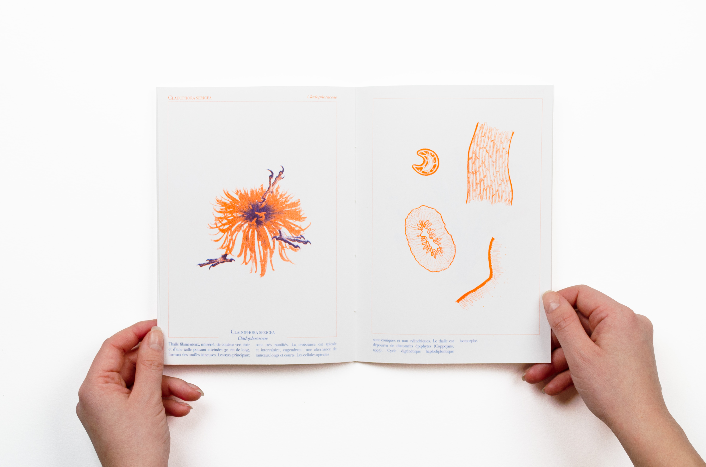
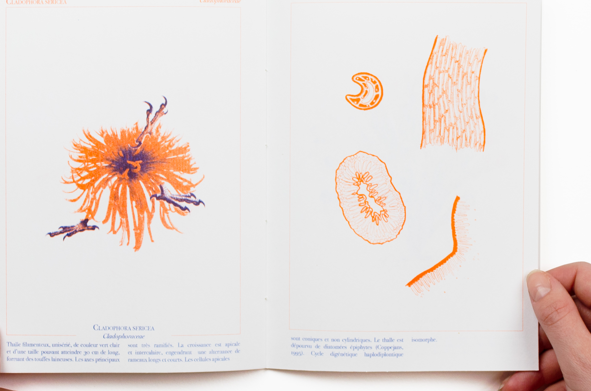